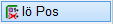
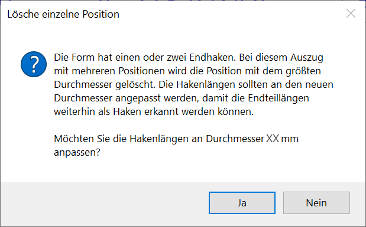

")
")
Alle mit einer Position verknüpften Verlegungen löschen. Der Auszug bleibt erhalten.
·Ist eine Form mit mehreren Durchmessern verlegt, gibt es für jeden Durchmesser eine Position. Diese Aktion bezieht sich nur auf eine Position. Gibt es nur eine Position für den Auszug, werden für die Anzahl und den Durchmesser ? Ø ? geschrieben.
·Einzelne Verlegungen können mit den Funktionen [Formst | VeStaf, VeForm, VeDuSn oder VeVout → lösche] gelöscht werden.
·Um Änderungen an der Bewehrung vorzunehmen, benutzen Sie die Funktionen "Form löschen" [lö Form], "Durchmesser ändern" [änd. Ø] und Position löschen" [lö Pos]. Damit stellen Sie sicher, dass die notwendigen Korrekturen auch an den Verlegungen durchgeführt werden.
·Wenn mehrere Positionen an einem Auszug vorhanden sind und die Position mit dem größten Durchmesser gelöscht wird, können die Hakenlängen an den nächstgrößeren Durchmesser angepasst werden. Sie erhalten in diesem Fall eine Meldung. Siehe: Hakenlängen an den Stabdurchmesser anpassen
 |
So wird's gemacht:
§Klicken Sie den Auszugstext der zu löschenden Position an. [Pos. anklicken].
Auszugstext und alle Verlegungen werden markiert.
§Wurde die Position richtig erkannt?
Wählen Sie unter Pos. richtig erkannt?, ob die markierte Position gelöscht werden soll:
|
Die markierte Position wird mit allen zugehörigen Verlegungen gelöscht. Der Auszug bleibt erhalten. Sie können sofort die Verlegungen einer weiteren Position löschen. [Pos. anklicken]. |
|
Die ursprüngliche gewählte Position und alle zugehörigen Verlegungen bleiben erhalten, die Markierung wird entfernt. Versuchen Sie erneut, den Auszugstext der zu löschenden Position anzuklicken. [Pos. anklicken]. |


Siehe auch: